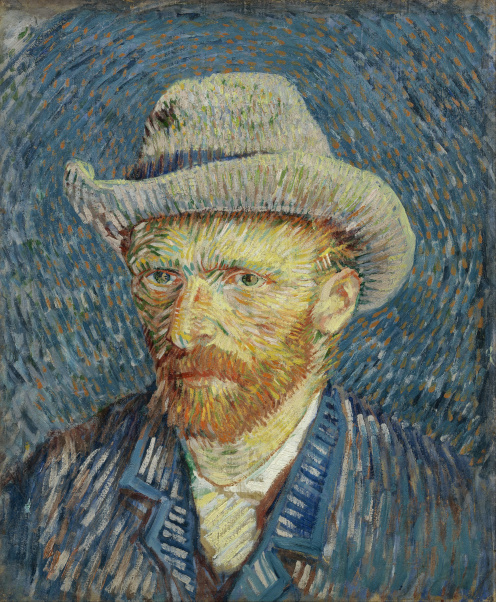

Je discute parfois avec des jeunes qui débutent dans le développement de jeux, ou l’écriture, le dessin… Ils et elles ont souvent des doutes qui les empêchent de progresser sereinement dans la création : la peur d’être nul·le, le piège de s’accrocher à ses premières idées… j’ai connu ça aussi. Voici mes modestes conseils qui pourront peut-être vous débloquer et vous aider à aimer ce que vous faites.
Je ne veux pas parler de mes idées car j’ai peur qu’elles soient plagiées.
On commence avec un classique ! Très souvent (voire quasiment toujours) lorsque vous avez une idée, cela veut dire que d’autres personnes l’ont eue avant vous. C’est logique : votre idée est probablement dérivée d’autres œuvres que vous aimez, ou bien de vos expériences de vie. On peut facilement imaginer que d’autres personnes aient pu suivre un cheminement similaire ! Dites-vous que votre concept n’est pas unique au monde, et qu’il ne vaut pas grand chose par lui-même. C’est plutôt en l’exécutant à votre manière que vous y insufflerez une véritable magie.
L’exécution, autrement dit concrétiser votre idée, c’est donc le plus important. La preuve, c’est que si vous essayez de raconter votre idée — qu’elle soit bonne ou mauvaise — les gens ne seront généralement pas spécialement impressionnés. Tout simplement parce qu’il n’ont pas le même rapport que vous à cette idée.
Bref, ne sacralisez pas vos projets. Ne les gardez pas pour vous parce qu’ils ne vous apporteront rien ainsi et ils finiront par mourir. Au contraire, soumettez-les au public pour les affiner, développez-les en profondeur, car personne d’autre ne le fera à votre place. Personne ne vous volera vos idées, à moins que vous n’ayiez vous-même prouvé leur valeur en les concrétisant dans une œuvre à succès.
Je sais bien qu’il faut s’entraîner régulièrement, mais si je suis vraiment nul·le ?
Au fond, vous savez bien que tout le monde fait n’importe quoi au début. Mon premier jeu, ma première histoire, ma première vidéo, mon premier selfie, tous étaient abyssalement nuls. Les deuxième et troisième aussi, qu’on se le dise. C’est désagréable de réaliser qu’on a produit quelque chose mauvais, mais il faut savoir se pardonner, tout comme nous devons comprendre les autres débutant·es qui tatillonnent. Même si c’est contre-intuitif, vous devriez célébrer le fait d’arriver à pointer vos défauts, car cela veut dire que vous ferez mieux la prochaine fois. Personne n’est devenu Van Gogh en lisant un tuto de peinture un beau matin ; même pas Van Gogh lui-même.

Ce p’tit gars a baigné dans le monde de l’art et a étudié un tas de techniques
au cours de nombreuses années avant de devenir le peintre que l’on connaît.
Soyez tranquille : commencez en partant d’une idée qui semble bien dans votre esprit, et ça viendra. Lorsqu’on écrit, le plus dur c’est les premières lignes, et c’est vrai que ce sont souvent les plus bancales, mais elles vous permettent de partir et après ça vient tout seul. Si vous êtes impressionné·e par la tâche, essayez les formats courts : ça vous permet de passer facilement à autre chose et de prendre du recul sur votre travail pour vous améliorer.
Et puis vraiment, ne vous posez pas trop de questions. Faire des jeux, écrire des histoires, ça n’a rien de crucial ou de dramatique. Ce que je veux dire, c’est que le but premier des gens qui nous regardent, c’est tout simplement de se changer les idées et se sentir bien. Ce serait dommage de dramatiser quelque chose d’aussi simple ! Quand vous créez, pensez à votre public — même s’il est imaginaire pour le moment — et faites de votre mieux pour le régaler.
Je souhaite créer des jeux mais je n’aime pas coder, comment faire ?
La programmation peut revêtir de multiples facettes. Il existe plein de langages et d’environnements différents qui ne vous donneront pas du tout les mêmes sensations. Je trouve un doux plaisir en codant dans certains langages, même si j’en déteste d’autres !
En tout cas, je me dois de vous dire qu’il n’existe pas de jeu vidéo sans code. Ce code aura peut-être la forme de blocs à déplacer dans Scratch, de circuits de redstone dans Minecraft, de textes à relier dans Twine, mais au fond, cela reste toujours de la programmation. Pour résumer : s’il n’y a pas de code, il n’y a pas d’interactivité, mais le code peut prendre bien des formes et on ne peut pas dire que c’est trop compliqué. Aujourd’hui, vous pouvez lire un tuto Ren’Py ou RPG Maker et faire votre premier jeu en quelques heures ! Peut-être qu’au final, même les outils les plus simples vous donneront des boutons (haha), et dans ce cas je vous conseille de tirer un trait sur l’idée d’ajouter de créer des œuvres interactives.
Sur le même sujet, ma vidéo “Comment faire des jeux sans programmer ?” pourrait peut-être vous intéresser.
… Je n’ai pas d’inspiration.
C’est sans doute la question qui m’a le plus freiné au cours de ma petite vie créative. J’ai eu bien du mal à me débloquer sur ce point, mais aujourd’hui je commence à comprendre comment je fonctionne.
Essayez de ne pas vous poser trop de questions. L’esprit tranquille, commencez en écrivant une idée qui a l’air bien dans votre tête. Forcez-vous à travers les premières lignes, et la suite viendra très rapidement, vous atteindrez le flow. Faites-le un peu tous les jours, ou du moins aussi régulièrement que possible, et lorsque vous sentez que cela devient vraiment intuitif, c’est que vous avez gagné. Vous commencerez à tenter des choses juste parce que votre instinct vous souffle que cela pourrait être intéressant, et vous serez sur la bonne voie pour évoluer durablement.
Dans le cas du dessin, du développement de jeux… l’équivalent serait de participer à des évènements comme l’Inktober ou les game jams1. C’est très motivant et ça fonctionne extrêmement bien pour relancer la machine.
Pour alimenter l’inspiration, il faut aussi alimenter votre cerveau de plein d’influences différentes. Tout comme il existe des méthodes de lecture active pour bien vous imprégner des enseignements d’un texte, il y a un visionnage actif et une façon de jouer active. Critiquer une oeuvre, constater ses problèmes, tout le monde peut le faire. Allez plus loin que ça et demandez-vous alors ce que vous auriez fait si c’était votre œuvre. Réfléchissez-y jusqu’au bout et proposez une solution concrète ! C’est une bonne façon de se triturer les méninges et d’améliorer sa capacité à résoudre des problèmes. Cela dit, lorsque vous êtes à l’aise avec cette gymnastique, il existe encore un autre stade… Dites-vous que le développeur ou la développeuse, qui a passé beaucoup plus de temps que vous sur l’œuvre, a probablement déjà constaté le problème, y a trouvé une solution tout comme vous, mais ne l’a pourtant pas implémentée. Pourquoi ?
En suivant ces étapes de raisonnement, vous allez vous améliorer tout en jouant, ce qui vous permettra de gagner du temps sur vos créations futures. Attention cependant, il faut aussi savoir apprécier les choses avec votre cœur et éteindre votre cerveau de temps en temps. Certains créateurs n’y parviennent plus et cela finit les dégoûter de leur medium. Autorisez-vous à vous déconnecter de temps en temps et vous réaliserez par la même occasion que le monde réel est une source intarissable d’inspiration. Bien des cultures, paysages et mythologies sont si inconnues du public que vous pourriez paraître comme un·e génie en vous contentant de les recopier. Cela peut sembler facile comme conseil, mais si vous vous penchez vraiment dessus, vous produirez quelque chose de plus intéressant que l’écrasante majorité des jeux vidéo notamment.
J’ai une super histoire. Dois-je attendre d’être meilleur·e pour la réaliser ?
Je me suis souvent dit que j’avais des concepts de jeux en or, ou bien des histoires qui me parlaient beaucoup. J’en rédigeais les grandes lignes sur des documents sans les concrétiser, car j’estimais que ce serait du gâchis de les réaliser avec mon faible niveau, alors que je pourrais leur rendre justice avec plus d’expérience. C’était au final bien éloigné de la réalité.
Si vous vous reconnaissez dans mon récit, j’ai le regret de vous dire que votre histoire n’est sans doute pas très bonne. Elle vous semble merveilleuse parce que vous la faites mariner dans votre esprit en comblant les trous irréalisables par un peu d’imagination et de “je saurai le faire un jour.” Tout le monde a ce genre de rapport avec ses histoires ; la vôtre n’est pas si différente des autres. Le meilleur moyen d’avancer est d’affronter ces difficultés et contradictions si faciles à oublier lorsque l’histoire est encore dans votre tête. Souvenez-vous que votre histoire est une étape avant la prochaine histoire, qui sera meilleure mais que vous ne pouvez pas encore voir avant d’être passé·e par la première. C’est probablement pour cela que vous avez l’impression que votre histoire est incroyable et essentielle : elle occulte les suivantes, et chaque année que vous passez à la ressasser est une année de moins pour les nouvelles, meilleures histoires. Alors lancez-vous, pour de vrai, et n’ayez pas peur de devoir vous adapter face aux difficultés.
Vous vous dites peut-être que je me répète un peu sur certains points. Je voulais simplement vous transmettre mon attitude générale face à la création. J’espère que cela vous aidera à y réfléchir.
-
Evènements souvent en ligne durant lequel les participants doivent créer un jeu en un temps limité et en respectant des contraintes. Par exemple, la Ludum Dare propose de créer un jeu en un weekend d’après un thème révélé le vendredi. ↩︎